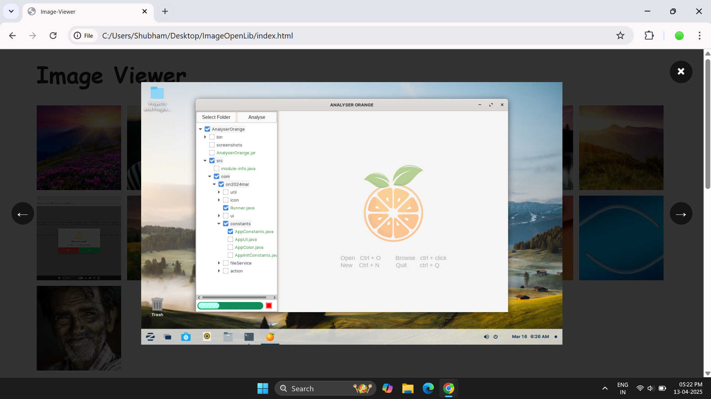
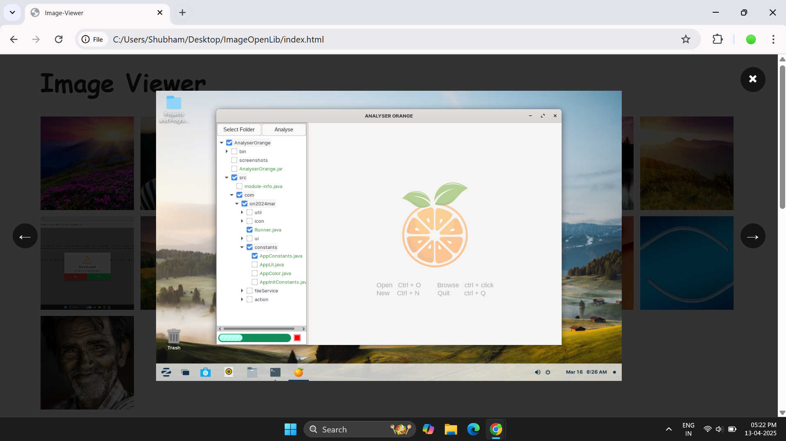

Media Viewer


 



Documentation
Usage
Just add the style and script to your page and you are ready to start!
Add data attribute data-media-preview="true" to make your container support media preview.
You can also add title to your medias
Open Media Preview with External Buttons
You can open the media preview using external buttons by linking them with the media using either
data-click-source (for a single button) or
data-click-sources (for multiple buttons).
Single Click Source (data-click-source)
Multiple Click Sources (data-click-sources)
Note: Both data-click-source and data-click-sources accept any valid
CSS selector.
Enable download button
You can enable the download functionality for specific medias or all medias by using the
data-media-downloadable attribute.
Enable Download for All Medias
Enable Video Preview Support
You can now preview **videos** by using `data-video-url` on a container element such as a
> The viewer automatically handles both images (`